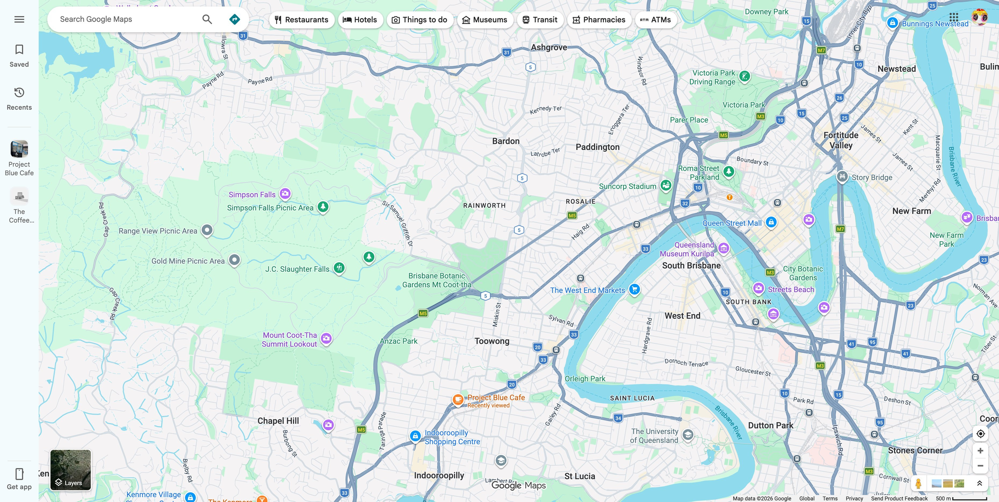

Map of Coffee
Coffee is the ritual of life, and we are the navigators of that ritual. Coffee Map connects every warm-hearted café in the city, capturing the aroma and story of each cup, so that even in the midst of busyness, you can find your own coffee corner.
